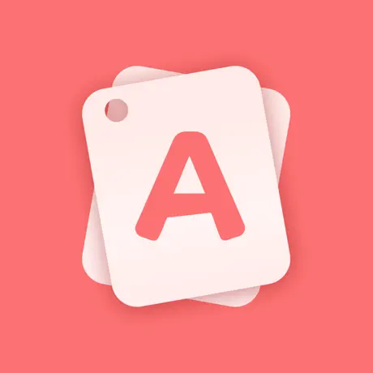
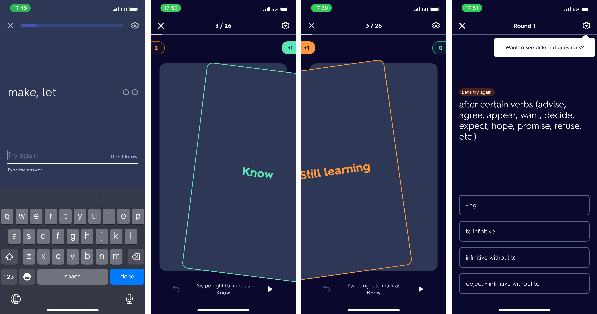
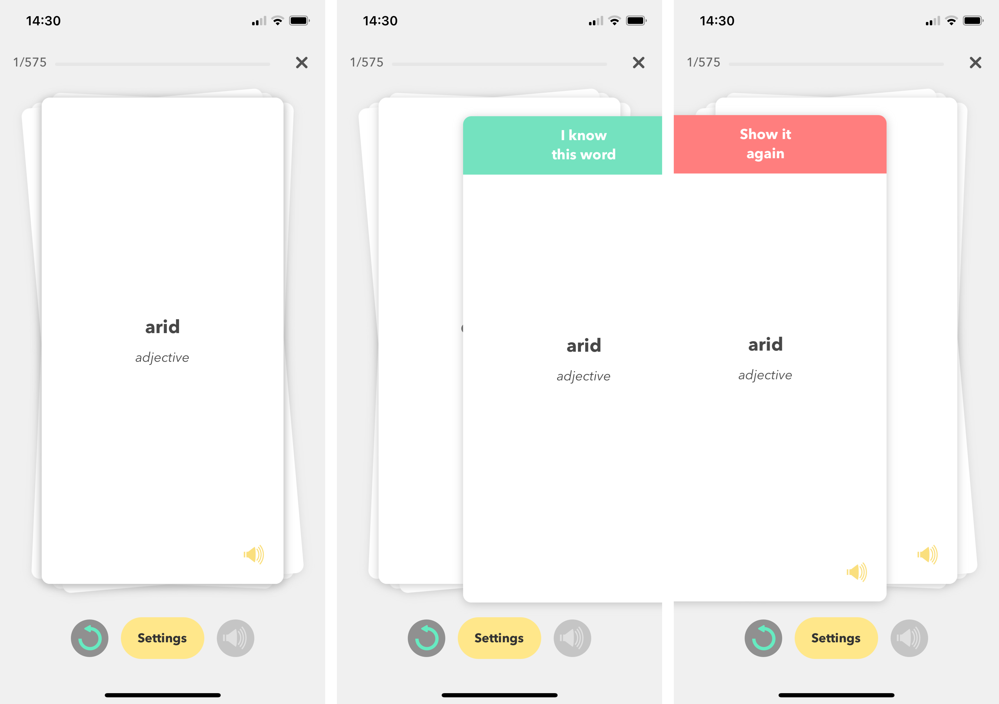
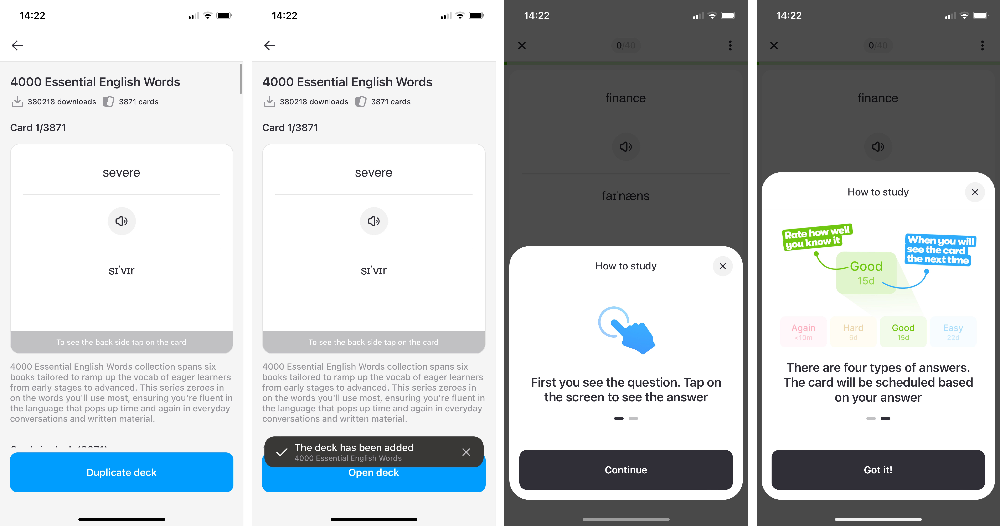
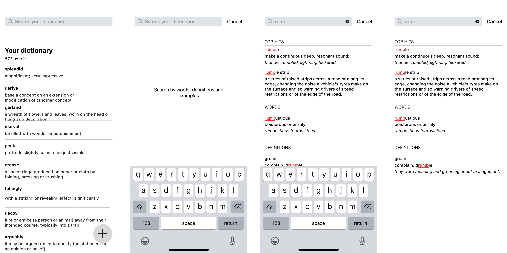

How I designed mobile app from scratch
<section> Problem and idea
- I am advanced english speaker. BUT I want to achieve native’s level
- Need to grow my vocabulary
- english word <-> translation. WRONG WAY
- english word <-> definition. RIGHT WAY
- Need a tool to effortlessly save and practice relevant to me words
<section> Competitors
| Logo | Name | Can add your of words | Source of definition | Can practice | Revenue model | # of users |
|---|---|---|---|---|---|---|
 |
Atlas | Yes | Oxford dictionary | Yes | Subscription | TBD |
 |
Oxford dictionary | Yes | Oxford dictionary | No | Subscription + Ads | TBD |
 |
Cambridge Dictionary +Plus | Yes | Cambridge dictionary | No | Subscription + Ads | TBD |
 |
Fluent Forever | Yes | User input | Yes | Subscription | TBD |
 |
Word Up | No | ??? dictionary | Yes | Subscription | TBD |
| Word of the Day | No | Oxford dictionaryt | No | Subscription | TBD | |
 |
LinQ | No | Some(?) dictionary | Yes | Subscription | TBD |
| GRE Vocabulary Flashcards | No | Some(?) dictionary | Yes | Free | TBD | |
 |
Lockcard | Yes | Some(?) dictionary | No | Subscription | TBD |
<section> Business model
WORK IN PROGRESS
<section> Design process
Jobs To Be Done
I found the Job Stories framework the most exhaustive way to frame my ideation process. It allows me to start with a problem rather than solution.
Saving new word

Accessing saved words
Practicing your words
Sketches and low fidelity wireframes
I started with exploring the structure of modern printed dictionaries


Researched other apps




Draw sketches


Did low-fidelity mockups

And experimented with forms

<section> Colour palette
Primary. The core of each dictionary are words and their background. Black and white. I wanted to stick with classics.
Secondary. Red often used to for accents e.g. in old books. Green is a complementary colour.
Tertiary. I needed a bunch of different colours to distinguish 8 parts of speech.
I combined colours to make sure they work on each other

<section> Typography
WORK IN PROGRESS
<section> Result: high fidelity wireframes
Saving new words
Accessing saved words
Working with saved words
Searching for saved words
Practicing your words
<section> Next steps/backlog
- teacher’s side of interface
- profile
- subscription page
- onboarding
- web version
- more user interviews
- find engineering buddy or learn Swift myself